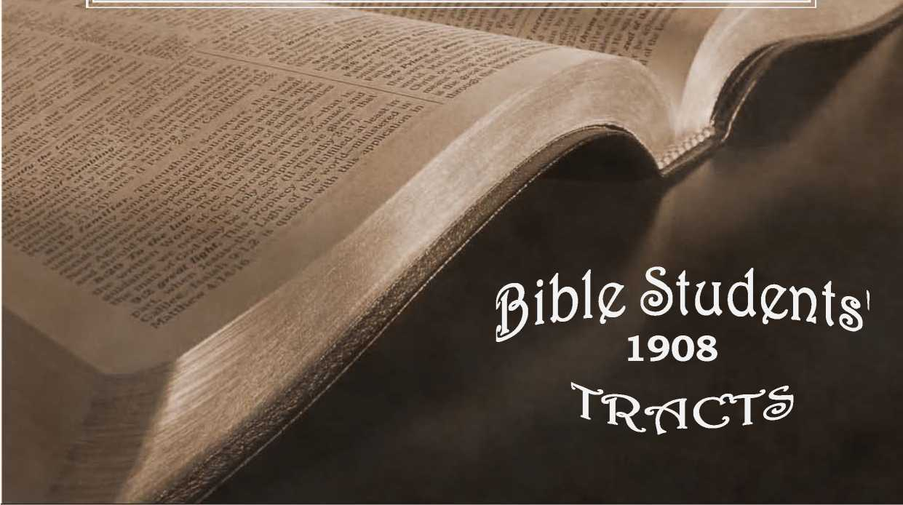

No. 80—Are You of the Hopeful or of the Hopeless? Seven Women Desire One Husband. The Millennial Morning Is Dawning! The Ransom Price Paid for Sinners Guarantees a Millennial Age of Restitution
NUMBER 8Q OLD THEOLOGY QUARTERLY. jAKyrW,s
PRIMARY STUDIES IN THS SCRIPTURES
ENTERED AT THE POST OFFICE, ALLEGHENY, PA. AS SECOND-CLASS MATTER
. BRANCHES: LONDON, N.W., 24 BVERSHOLT ST.; MELBOURNE, EQUITABLE BLDG., COLLINS ST.
ALSO ELBERFELD, STOCKHOLM, COPENHAGEN, YVERDON-SUISSE. ______________________
.THE INSPIRED MESSAGE FAR. BETTER THAN THE CREED
TRADITIONS OF THE DARK AGES
“At that time ye were without Christ, being aliens from the Commonwealth of Israel, strangers from the Covenants of promise, having no hope, and without God in the world. But now in Christ Jesus ye who then were far off are made nigh by the blood of Christ.”—Eph. 2:12, 13.
Our text shows us that the Christians of Ephesus who (came into a good hope through faith in the precious blood of Christ were previously hopeless—without God and having no hope. If we apply this inspired gauge or standard to the whole world today we find the great mass of mankind to be hopeless, and hence unhappy, burdened, downcast, miserable.
v And surely, as we look into the faces of the majority of the hundreds and thousands whom we meet daily, $ we see their hopelessness, their ..dej ection, plainly written in their faces. True, in some cases we see mirth, in _ A others carelessness, but these are by no means the majority, and even with them a closer acquaintance shows that they are trying to be happy, trying to be mirthful, V I trying to be careless, rather than succeeding. And what J” | we see on the faces of the most civilized of humanity J may be still more clearly discerned in the countenances of the heathen in general. Extremely few faces notify 'Jus that love, joy, peace, reside within, building upon a $ blessed hope. True, in every land there are some so XJ rich in wealth and honor and friends that seemingly
Q they have no need of hope for anything either in the present life or in the future. But these are exceptions also, and very many of them betoken, not only in coun-rf tenance but in words, that they have not a satisfying portion—that their riches of various kinds only partially satisfy the longings of their hearts; that they know of a surety that the present life is fleeting, and that ) \ they have more or less trepidation, fear, unrest, whenever they think of the future—beyond the grave.
Statistics divide the population of earth into 400,000,000 of Christians and 1,200,000 heathen—just twice the number there were a century ago. It is hard for us to comprehend such large numbers, but, according to our text, this immense host of heathen are without God and have no hope in the world—they are hopeless. We should notice, however, that the Apostle does not state that there is no hope for these heathen, but simply that they do not have the hope. According to the Apostle God’s favor is all centered in Christ, and only those who know of Christ and of divine mercy arranged for through him can possibly exercise faith in him, and hence only those believers could have the glorious hopes which,center in him and await fulfilment at his second coming. ;
Indeed, we may say that the heathen are worse off than hopeless. They not only do not have hope, but instead of it they have fear, a most , awful fear, which overshadows all the affairs of the present life. Spiritism—more truly “demonism”—has long exercised itself amongst them, besetting, threatening, obsessing and tormenting them. It has taught them to fear God as the great arch-demon, and to expect a future life with new and still more trying difficulties than those they now experience, so that with many the only hope of escape from trouble is the belief that they shall ultimately become oblivious of everything, both good and evil. Alas, poor heathen!! How much they need enlightenment ! They do not need rum, tobacco and opium from the so-called Christian nations—neither do they need to be taught their profanity and vices; they have enough of their own. But they do sadly need the light of the knowledge of God as it shines in the face of Jesus Christ our Lord. They do need the true Gospel which the angels proclaimed at the birth of Jesus: “Good tidings of great joy which shall be unto all people.”
With commendable zeal, but not according to knowledge (Rom. 10:2), missionaries have gone to the heathen from Christian lands in a spirit of devotion and selfsacrifice. Some of these have gladly laid down their lives in the service of the heathen according to their light, while others, as hirelings, performed the duties required of them by the denominations supporting them as the easiest and smoothest path in life. As the Apostle suggests, however, Christ is preached, whether of devotion or denominational strife. But alas! the true Gospel of Christ is rarely heard, rarely reaches the heathen ears. What they do hear is confusing, bewildering. The trumpet has an uncertain sound. The Methodist’s bugle sounds “free grace;” the Presbyterian, “election” and “predestination;” the Baptist and Disciple, “water;” the Roman Catholic and Episcopal, “Apostolic succession.” To the heathen mind Christ is divided, and his followers cannot agree amongst themselves as to what his teachings are and as to what message should be proclaimed. There are, however, two points upon which they all agree—(1) all mankind are sinners, “born in sin,” and (2) that Christ Jesus is the only Saviour, “For there is none other name given under heaven or amongst men whereby we must be saved.” (Acts 4:12.) They all agree that the heathen are not saved in ignorance of Christ, and that the missionaries have gone to them to proclaim Christ and to lead them to faith in him in order that they may be saved. As the Apostle says, “How shall they believe on him of whom they have not heard!” for “faith cometh by hearing,” and hearing depends upon the message of God.
In all of the above teachings respecting the necessity of faith in Christ as our Redeemer we heartily agree. This is the very kernel and essence of the Gospel of Christ as set forth in the Word of God. But the beauty and force and blessing of this Gospel message is vitiated by a terrible error which crept into Christian faith in the Dark Ages, namely, that the salvation which Christ accomplished for us is a deliverance from condemnation to a fiery hell of eternal torment. This is untrue—un-' scriptural. It is a slander upon our great Creator to declare that he made our race subject to such awful conditions—to declare, for instance, that the heathen who have died during the past 6,coo years—thousands of millions of them—without any knowledge of the Savior, therefore without any faith in him, and without any hope in him, have gone down to a hopeless eternity of torment and despair. This is one of the doctrines which the Apostle Paul styles “doctrines of devils.” The heathen get enough of this through their own demonology, originated before the Christian missionaries ever preached to them; but it is doubly sad that, when the message of the love of God as manifested in Christ is being proclaimed to them, this “doctrine of devils” should be attached to it and apparently confirm the demonology under which the poor heathen have so long been held in bondage to Satan.
Can we wonder that the poor heathen, who have been taught to worship their ancestors, should be shocked with this false Gospel message—that all of their forefathers have been turned over to fire-proof devils to be eternally tormented, because they were not fortunate enough to hear and accept “the only name under heaven given among men whereby we must be saved?” We can fancy the poor heathen saying, “Is this your God of love? And pray what are your definitions of the words iove and justice? You who claim to be the only exponents of the only plan of salvation, is this the best your God can do for us.? If he is loving, is he powerless?” Alas! alas! The difficulty is not with our allwise, all-powerful, all-just and all-loving Creator, nor with the glorious plan for human salvation which he has centered in his Son, our Lord Jesus Christ. The difficulty, the inconsistency is in the error which has become mixed with the Gospel of Christ as set forth in the Bible. The Apostle spake of some in his day who preached another Gospel—and so it is to-day. In the name of the one Father, God, and one Savior, our Lord Jesus, another Gospel is being preached, not only , amongst the heathen but also in civilized lands—a false Gospel—an untrue message, which misrepresents the truth, and is a slander, a grievous slander, upon the divine character.
We have seen the hopelessness of the heathen and how little hope is afforded them in the message that is being preached to them in the name of God and of Christ. Not only is this message one of despair as respects their forefathers, but equally as respects the great mass of their living kindred. Indeed, as the Prophet has pictured this erroneous teaching, it is like a bed ' that is so short that a man cannot stretch himself on it —cannot exercise his mind and heart so as to find rest therein; and, as the Prophet continues, “the covering is so narrow that a man cannot wrap himself in it.” If he tries to convince himself that he is one of the very select class, destined for eternal blessedness, while the great mass of mankind are destined to eternal woe, fear will creep in in spite of his efforts, just as do the chilly winds upon the person who has too narrow a bed covering. He is bound to fear that the apparent partiality of God in permitting his escape from eternal torment, to which millions of others are consigned, may some day change toward him and drop him into eternal misery.—Isa. 28:20.
Let us turn now from these obnoxious misrepresentations of the divine character and plan and note the beauty and simplicity of the Bible’s teaching respecting what man was condemned to, what he is delivered from, and of what his salvation shall consist. Let us note first how different the tone, how different the ring of the Scripture references to the Gospel from anything that could properly be applied to these false gospels, these misrepresentations of the divine plan which have come down to Christendom from the Dark Ages. Hearken to the first word from the Lord respecting the Gospel—the message to which St. Paul refers when he says, God preached the Gospel in advance to Abraham, saying, In thee and in thy Seed shall all the families of the earth be blessed. (Gal. 3:8.) Is this the Gospel of salvation or of damnation? Good tidings or bad tidings? Assuredly the former. Indeed, as all are aware, this is the very meaning of the word “Gospel”— good tidings.
How evidently, then, some terrible mistake has been made by somebody when the message of eternal torment for 999 out of every 1,000 of earth’s teeming population has been called Gospel. The word could not have been more seriously perverted, for that surely would be bad tidings of great misery for practically all people. But this first message of the Gospel to Abraham tells of the blessing of all the families of the earth—it excludes none. It extends backward as well as forward. It takes in the families of the earth that were living before the flood as well as those living in Abraham’s time and all who have lived since, and all who will live in the future. God’s promise, the Gospel message, is that all of these shall be blessed. Have they been blessed yet?- Assuredly not. Blind, indeed, would be the eyes of understanding or judgment that could suppose that this gospel blessing has yet come to all the families of the earth. Note again a very similar statement in the New Testament—the message of the angels at the time of our dear Redeemer’s birth. They said to the fear-stricken ones before them: “Fear not, for behold we bring you good tidings of great joy which shall be unto all people.” All Christian people, whatever trumpet they blow, by whatever name they are known, claim these records and translate them just as we have done. But it is when they come to apply them that they fall short.
Those who believe in the doctrine of election would have us understand that God did not mean that the Gospel would be a blessing to all the families of the earth, “to all people,” but merely to the Elect, chosen out from among all nations and people. Those who hold to the doctrine of “free grace” would deny this, and declare that there is no election and no preference with God; yet their theory also would make these divine promises of no effect by claiming that God has limited the blessings to the energies of his people, and that the most that these promises could mean is that ultimately the zeal of the Lord’s people will be so great that they will accomplish the evangelization of the world, that the “all nations” of these promises are those of the future, and that the thousands of millions of all nations dying in the interim have been without any blessing and will have none. These two messages are practically all the explanations of these glorious promises that the heathen have heard. Alas ! Alas!
We have already intimated that errors handed down from the Dark Ages are casting this great cloud upon the divine character and plan, hindering a proper appreciation of the glorious plan of salvation which centers in our Lord Jesus Christ. The first of these, as already intimated, is a misconception respecting hell. The Bible “hell,” as we have elsewhere shown, is not a hell of torment, but of death, destruction, unconsciousness. According to the Bible the penalty upon Adam, which descended to us, his children, in conformity with the course of nature, is the death penalty. He, created perfect and in God’s image, might have lived forever had he been obedient, but, disobeying, he came under the sentence, “dying thou shalt die.” This sentence is the wrath, the curse that rests upon all mankind, dying we all die because we are the children of Adam and share his sentence as we share his depravity. Hearken to the Apostle’s word on this subject: “By one man sin entered into the world and death (not eternal torment) as the result of sin, and thus death (not eternal torment), passed upon all men, because all are sinners.”— Rom. 5 :i2.
According to the Scriptures, as well as according to the facts, as we see them, both the wise and the ignorant, moral and immoral, believers and unbelievers, die and go into Sheol, into Hades, into the state of death. This dying process has continued now for over 6,000 years and it is estimated that 20,000,000,000 have been “born in sin, shapen in iniquity” (Ps. 51:5), lived in more or less depravity and imperfection and died with more or less of pain, sorrow and hoplessness. The tomb, the great prison-house of death, is well filled with almost enough to reasonably populate the earth. The Scriptures declare “that they know not anything.” (Eccl. 9:5.) They have not gone to a heaven of bliss, for our Redeemer declared that “no man had ascended up to heaven.” (John 3-.13.) The Apostle Peter declares that “David the Prophet has not gone to heaven.” (Acts 2: 34.) The wise man declares that they all are in Sheol, Hades, the tomb. (Eccl. 9:10.) How glad we are that this great mass of mankind are neither in a hell of eternal torture suffering at the hands of fire-proof devils nor in a purgatorial inferno, as taught by our Roman Catholic friends ! How glad we should be that the doctrine of devils, which consign them to such torture, is entirely untrue, unscriptural, and that we are not obliged to think that our heavenly Father is an archdemon, but, according to the Scriptures, may know him as a God of love.
We have elsewhere also shown that those who translated our Bibles have in some instances twisted their translation in harmony with their misconceptions and that our minds thus perverted have misunderstood some of our Lord’s beautiful teachings and been stricken with fear at some of the symbolical pictures of Revelation which we did not understand.
The second point of error received in the Dark Ages is that which teaches that death ends all hope. There is not one word in support of that erroneous thought within the lids of the Bible. On the contrary, its teachings abound with hope for many of the world in the future. Not that the Scriptures teach that a knowledge of the grace of God now may be trifled with, but that the vast majority never yet had a full, fair opportunity to benefit by the redemptive work of Christ. Ignorance, superstition, depravity, and the God of this world have unitedly obscured the eyes of their understanding more or less, and only in proportion as each has seen, has tasted, has appreciated the grace of God in Christ is each now responsible. This certainly throws the possible opportunities of the vast majority of the race into the future, and, as we shall shortly see, the Scriptures fully corroborate this thought, and promise to Adam and all of his posterity a full individual opportunity for return to harmony with God and a possibility of life everlasting.
Let us remember that from God’s standpoint the entire human race was sentenced to death as unworthy of life because, as the Scriptures declare, “There is. none righteous, no, not one,” and eternal life is intended only for the righteous. The Scriptures declare also that Jesus is a Savior and a great one, but human theories would make his the Savior of a small handful of the race, and then declare that that handful get their salvation by their good works instead of by God’s grace. Let us see more fully what the Scriptures teach. Let us note the beauty, grandeur, length, breadth, depth and height of the divine plan therein set forth.
The Bible does teach an election—that ever since Pentecost God has been choosing from jews and Gentiles a Little Flock to be the Bride of Christ. It also teaches that evil is permitted in order that the way of obedience to God may now be narrow, to. the intent that these Elect ones shall be thoroughly tried, tested and proved as respects their faith in God, their loyalty to him and his righteousness. All of the New Testament Scriptures are addressed to this class—none of them to the world. Jesus prayed for his apostles and for all those who would believe on him through their word; but added, “I pray not for the*world.” The reason, for this was that he knew that the present was not the Father’s time for dealing with the world, but merely the time to deal with those called to be the Bride. To this Bride is promised the “exceeding great and previous promises”—to be partaker of the divine nature with our Lord, to share his glory, honor, immortality and Kingdom. The Elect enter into these joys and blessings not at death, but in the resurrection, as the Scriptures declare—“Blessed and holy are all them that have part in the First Resurrection.” (Rev. 5:10; 20:6.) “They shall be kings and priests unto God and shall reign on the earth.”
Everywhere the Scriptures point us to the second coming of Christ and his Kingdom of righteousness, which will then be established “under the whole heavens.” (Daniel 7:27.) It is for this Kingdom that he taught the Elect to pray, “Thy Kingdom come, Thy will be done on earth as it is in heaven.” (Matt. 6:10.) Tlmt Kingdom has not yet come. God’s will is pot yet done on earth as it is in heaven. The Church with her Lord . is to constitute that Kingdom, and it cannot be established until the gathering of the Elect from the world has been accomplished.
The long promised Kingdom of God is the hope of the world. Christ and the Church, spirit beings unseen of men, will take charge of the affairs of earth. During that reign of righteousness Satan will be bound for a thousand years, that men may be free from his deceptive influences and from all the power of demons. Then the “Sun of Righteousness” will scatter all the darkness of ignorance, superstition and sin, and the whole world will be brought to a knowledge of God in his true character as a God of love, a God of justice, a God of mercy, a God of power. So forceful will this be that the Scriptures describe the effect in these words, “Then every knee shall bow and every tongue confess.” (Phil. 2:10, 11.) There will be none in ignorance. Thus the living, under the judgments of the great King,’will be instructed in righteousness and helped out of their fallen and weak condition, back to their mental, moral
4
and physical life and health and strength. And only those who will deliberately refuse and rebel against that reign of righteousness shall be accounted wicked, and be everlastingly destroyed in the Second Death, without hope of a resurrection or any kind of recovery.
But this glorious hope is not merely for those who will be so fortunate as to live at, or after, the second coming of our Lord and the establishment of his Kingdom. The great King has all power. He declares that he has the key of the great prison-house of death, hades, and that it is his good pleasure that all that are in their graves shall hear his command to come forth —the good and the evil. The First Resurrection, as we have already shown, applies to those who have hope, but the future resurrection will include all the remainder, who will come forth for a judgment or trial or test, to see whether or not their past experiences with sin and their experience with righteousness will lead them to choose righteousness with all their hearts and thus to choose the blessing of God, eternal life.. Here we have the resurrection hope which the Scriptures everywhere set forth.
We remember the Apostle’s words, “For the hope of the resurrection of the dead I am called in question.” (Acts 23-6.) The Apostle Paul when at Athens preached of. “Jesus and the resurrection.” (Acts 17: 18.) Fie set forth Jesus as the one who paid to Justice the ransom price for Adam and his race; and the resurrection as the glorious result—the method by which divine forgiveness will be made operative to the dead and dying race. To this agrees also the message of the Apostle Peter: that at the second coming of our Lord God will grant a great blessing, so that times of restitution will ensue.—Acts 3 n'9-21.
Whoever will take a concordance and look up what the Scriptures have to say about hope will be thoroughly convinced that as the heathen are without God and without hope, Christians . are everywhere exhorted to hope and to allow this hope to be an anchor to their souls, while they wait for the fulfilment of all the precious things God has promised through the Redeemer—to be brought unto us at his revelation, at his second coming, at the establishment of his Kingdom. (1 Pet. 1 :i3.) Let us, then, search the Scriptures that we may enjoy this hope, and, as the Apostle says, “Be ready to give an answer to everyone that asketh us a reason for the hope that is within us, with meekness and fear.”—-i Pet. 3:15.
PARTIAL LIST OF SCRIPTURES WHICH WE UNDERSTAND TO TEACH THE
all things’
Acts3:19-21—Note that the inspired Apostle declares that all God’s holy prophets spoke of these times (vss. 21, 24). We should therefore expect to find something concerning Restitution in the writings of each prophet of the Old Testament.
Gen. 12:2,3 ; 18:18; 22-.17,18—All the families of the earth are here mentioned as beneficiaries. Observe that St. Paul explains that the Seed which will confer the blessing is Christ and his Church (the mystical Body of which Jesus is the Head).—Gal. 3:16, 29 ; 1 Cor. 12:12, 27 ; Eph. 1:22, 23.
Jev. 30:18 ; 31:8, 9—For comments on these words promising a Restitution blessing, see Rom.u:i2,i5.
Jer. 31:29,30,34—Compare Rom. 5:12 ; John 1:9; 1 Tim. 2:4.
Ezekiel 16:44-63—God saw fit (vs. 50) to slay the Sodomites ; yet our Lord Jesus said (Matt. 11:23) that they would have repented under such a ministry as had been granted to Capernaum, which repented not. Does not this course on God’s part indicate that, since he is no respecter of persons (Acts 10:34), and since it is his will that all shall come to a knowledge of the truth, the death-imprisoned Sodomites shall be brought forth (John 5:29) to their "former estate” (Ezek. 16:55). and "in .that day” be given an opportunity to believe in the "only name given under heaven or among men, whereby we must be saved ?” (Acts 4:12.) Our Lord’s declaration that it would be more tolerable for Sodom in the Day of Judgment than for some who heard and rejected him, implies that that time will be tolerable for all in proportion as their sins had been sins of ignorance. (Matt. 11:24; Luke 12:47, 48.) And it would be difficult to foretell the restitution of the Sodomites more clearly and more definitely than is done in this chapter. And in selecting so extreme an example of clemency our Lord evidently intended that we should see that the sacrifice which he gave was unquestionably "a ransom for all.”
Daniel 2:44; 7:13,14, 27—This is a prophecy of Restitution—because any prophecy of the Kingdom of Christ and his saints is a prophecy of Restitution ; for the Kingdom is to be set up at the second advent of our Lord Jesus, "whom the heavens must receive until the times of restitution of all things.”—Acts 3:^
Amos 9:11-13—For inspired comment on this prophecy of Restitution see Acts 15:13-18. The words of this Apostle agree with those of Paul (Rom. 11), for he says that this blessing is to be brought to Israel in order that the rest of "men might seek after the Lord, and all the Gentiles.”
WATCH TOWER BIBLE & TRACT SOCIETY, ALLEGHENY, PA., U. S. A.
BRANCHES :—LONDON, N.W. ELBERFELD COPENHAGEN STOCKHOLM YVERDON-SUISSE MELBOURNE
Order free sample Tracts on any topic, in any language.
NUMBER 80 Part 2
OLD THEOLOGY QUARTERLY.
JANUARY, 1908 6e a yr
PRIMARY STUDIES IN THE SCRIPTURES
BNTHR2D AT THB POST OFFICE, ALLEGHENY, PA. AS SECOND-CLASS MATTER
BRANCHES: LONDON, N.W., 24 EVBRSHOLT ST.; MELBOURNE, EQUITABLE BLDG., COLLINS ST.
ALSO ELBERFELD, STOCKHOLM, COPENHAGEN, YVERDON-SUISSE
None of Them Has His
Symbolical Bible Picture of Present-Bay Religious ■ Conditions
‘‘Seven women shall take hold of one man in that day, saying, IVe will eat our own bread and wear our own apparel; only let us be called by Thy name, to take away our reproach.”—Isa. 4:1.
Many of the prophecies are highly figurative, symbolical. Doubtless they had some measure of application to the circumstances and conditions of the people of Israel at the time they were written, but we have apostolic authority for concluding that their principal lessons were intended for Spiritual Israel. Saint Peter declares that “holy men of old spoke and wrote as they were moved by the holy Spirit,” and that “not unto themselves but unto us they did minister the things which are now reported unto you.” (2 Pet. 1:21; 1 Pet. I :i2.) Our Lord and the apostles in their teachings quoted continually from the prophecies and invariably applied the lesson to their day or to some future event of this Gospel Age. Hence, we are abundantly justified in assuming that our text is applicable to some period of this Gospel Age. Its peculiar expression, “In that day,” is usual all through the Scriptures in referring to the closing period of this Gospel Age, with its time of trouble and general Church and world confusion incident to the inauguration of the new dispensation, the millennium. It is proper, then, that we seek to apply this Scripture to our time and appropriate its lesson, whatever it may be.
Throughout the Scriptures a woman is a symbol of the Church—a pure woman of a pure Church, a cor-||rupt woman of a false Church. We find our Lord comparing the true Church in the end of this age to a company of virgins—part wise and part foolish—and likening himself to the bridegroom who, at the end of the age, had come to receive his espoused Church to himself in glory. John the Baptist pictured the matter after the same manner, saying, “He that hath the Bride is the Bridegroom;” the Apostle Paul amplifies the figure, declaring, “I have espoused you (the consecrated Church) as a chaste virgin unto one husband, which is Christ.” (John 3:29; 2 Cor. 11:2.) Here, as well as in the Lord’s parable of the virgins, the Jewish marriage is set forth as the example or pattern of the union between Christ and the Church—a very different figure from our marriage custom of the present time. With the Jews in olden time, when a betrothal took place, legal and binding documents were signed by or for the contracting parties, but no actual marriage or union took place for about a year. During that year, while waiting for the coming of the bridegroom to receive her unto himself, to take her to his own house, it was required of the espoused that she should be as faithful, as loyal, as true to her espousal as is now expected of any true wife who has been actually and fully married to her husband. We see the harmony between the Jewish marriage custom and the Lord’s dealings with the Church. No one is espoused to the Lord except he has entered .into a formal and definite contract with him, the contract on the Lord’s part being the exceeding great and precious promises of the Scriptures, assuring the espoused that if found faithful she shall be jointheir with her Lord, the Bridegroom, in his Millennial Kingdom and all its glories. The contract on the part of-the Church is our covenant of consecration, loyalty, faithfulness unto our Redeemer, to whom we are espoused, even unto death. The interim following our personal acceptance of the Lord’s gracious promises by a full consecration of our all to him and his service until we actually die corresponds in a measure to the betrothal period of the Jewish maiden; but the still clearer and more exact fulfilment of the figure is found in the history of the Church as a whole. The Lord’s virgin Church was espoused to him at Pentecost, and has been awaiting the coming of the Bridegroom and the resurrection change to glory, honor an-d immortality— the marriage, the union—for nearly nineteen centuries.
The Bride in Kingdom Glory
Our Lord continued the same lesson and illustration in his last message to the Church, recorded in the book of Revelation. There he still continues to picture the Church as a betrothed virgin, unmarried, but under strictest obligations to purity and faithfulness down to the end of this Gospel Age, where she is represented as making herself ready for the Bridegroom’s coming and for the marriage. To be ready, as the Apostle explains, she must have on the wedding garment, and it must be “without spot or wrinkle or any such thing.” (Eph. 5:27.) Not that any member of that glorious company could even hope to maintain absolute purity and perfection, since all were “born in sin and shapen in iniquity” (Psalm 51 ’.5) ; but that the robe representing the imputed righteousness of Christ covers every unintentional blemish and imperfection, and that any blemish or soil or spot or wrinkle upon this robe would be a cause of such grief to the betrothed one that the stain would be removed and the wrinkle pressed out by the gracious arrangements made therefor by the heavenly Bridegroom, who presented the robe and gave the directions by which it might be kept “unspotted from the world”—“without spot or wrinkle _ or any such thing.”
The same record shows that with the resurrection “change” in the end of this age the “espoused virgin” Church will be no more, because she will have passed from her espoused state into the more exalted one of the Bride—married or united to her Lord and Bridegroom. Note the symbolical picture by which she is represented: the New Jerusalem coming down out of heaven—that is, the heavenly Kingdom, the new government or rulership of the world, is then pictured as the glorified Church, the Bride; for we read that the Messenger said to John the “revelator,” “Come and I will show you the Bride, the Lamb’s wife” (no longer the espoused virgin). Then he showed him the holy city, filled with the glory of God. (Rev. 21 -.9, 10.) The grand office or work of the Church in glory is also pictured before US as the work of the Bride—“the Spirit and the Bride shall say, Come, and whosoever will may take of the water of life freely.” At the present time not only is the Church not the Bride, but she is not even privileged to say, Come, to whosoever wills, but only to “as many as the Lord your God shall call” (Acts 2:39) ; for with the calling and drawing of this present time there is a measure of election, as the Scriptures declare in our Lord’s words, “No man can come unto me except the Father which sent me draw him.” (John 6:44.) Moreover, there is no river of the water of life now, That bountiful provision is for the future—for the world during the Millennial Age. Now, as our Lord declares, those who believe in him and become his consecrated followers are granted to have in themselves a well of water springing up unto everlasting life. (John 4:14.) The river of the water of life and its bountiful provisions for the world of mankind, to which all will be invited, is most clearly and distinctly set forth as belonging to the epoch of the Millennial Kingdom, when the Church will be no longer an espoused virgin, but the Bride, the Lamb’s wife—when she will be no longer in a condition of humiliation and groaning because of her burdens, but, filled with the glory of God, the Kingdom of her Bridegroom, with which she will be associated, will be the fountain (the holy city) from whence will proceed a great river of truth and grace, of which all mankind may drink to full satisfaction and everlasting life, if they will.
The heathen and children in Christian lands when they begin to study the Bible are perplexed and inquire, Which is the Church of Christ? They see various churches of various names claiming they are branches of the Church of Christ. The unsophisticated mind inquires, Which is the true? Which did Jesus establish? Of which was he the Head and founder? To which did the apostles belong? The answer implies confusion and reproach. Each denomination claims to be as good as any other and a little better, to be as true as any other or a little more so, to be as legitimately the Lord’s espoused Bride as any other. A measure of confusion comes as they severally endeavor to tell us their origin and founders, for one saith, “I am of Calvin;” another, “I am of Luther;” another, “I am of Wesley;” another, “I am of Zwingli.” But when confronted with the thought that these various sects and parties all originated within the past few hundred years, and when asked how they can reconcile this fact with the declaration of the Scriptures respecting the founding of the Church by Christ, with the twelve apostles as the living foundation stones, they are confused.
The more courageous attempt an explanation and tell us that their Church was the original one founded by the Lord and the Apostles, but that a great falling away from the original simplicity took place, so that for long centuries Methodism was forgotten, Calvinism was forgotten, Lutheranism was forgotten, until later Wesley, Calvin and Luther revived them. But, we ask, How could Wesley re-establish the original Church if Calvin had re-established it? How could Luther re-establish it if Zwingli re-established it? Again there is confusion of face and stammering and hesitancy for an answer. Then the Church of Rome, the Greek Church and the Church of England come forward ana declare that their organizations are older than any of these others, and that hence theirs are the true, the original; but again we ask, Which of you is the oldest ? and where did your organization begin? Give us the proofs. All claim genuineness and originality, but none can show any existence of its present organization earlier than the third century. And when we contrast their elaborate and formal services with the simplicity of the early Church, as described in the New Testament, we are sure that there can be no identity between the two. When we compare their doctrines with the doctrines of Christ and the apostles, as set forth in the New Testament, there is an equal inharmony—their claims fall to the ground for lack of support. The doctrines and practices of the churches of the Reformation period and since evidently are much more in harmony with the practices and doctrines of the Apostolic Church than are the older systems; but they are still far from being in thorough accord with each other and also out of accord with the original.
We have no time here to discuss fully the difference of faith and practice between the various denominations of to-day, nor to contrast with these the faith and practice of the Church organized by the Lord. We will merely refer to a few of these latter. The Scriptures teach that there is but one God the Father and one Lord Jesus Christ (1 Cor. 8:6); that the Father is above all, that he sent the Son to be our Redeemer, and that when he had faithfully accomplished the work the Father raised him from the dead and exalted him to his own right hand or place of favor—next to himself —and the Redeemer himself said: “The Father is greater than I.” (John 14:28.) But the various churches, each claiming to be the original, unite in telling us that there are three Gods, “equal in power and glory.” Sometimes they explain that the three Gods operate as one God; at other times they claim that there is but one God, but that he has made three different manifestations of himself to assist us in comprehending him, and that each manifestation is as much the one God as the other.
What confusion! How impossible for those whose minds are thus muddled to understand respecting the divine plan of salvation, to comprehend the Scriptural statement that “there is one God and one Mediator between God and men, the man Christ Jesus; who gave himself a ransom for all, to be testified in due time”! (1 Tim. 2:5, 6.) How could one part of God be a mediator for men with the other part of the same God? Above all, how could God in one manifestation die as Adam’s substitute and ransom, while the same God in another sense would accept that ransom and raise the other part of himself from the dead? How can our dear friends, confused by the errors they have carried with them from the “dark ages,” understand or appreciate that Christ died for our sins according to the Scriptures, and that the Father raised him from the dead by his own power on the third day? In their confusion of trying to think of the Lord Jesus as being one in person, one in essence, etc., with the Father, they cannot imagine that he died at all, for if God died in any comprehensible sense there was a period in which the universe was without a God! and how could the Father raise the Son from the dead if the Son was merely another name for the Father? All this confusion has tended to undermine the faith of the more rational members of all these various churches, until to-day their faith is a very indefinite thing, hard to define, if indeed it has any form or tangibility. So disgusted have people in general become with their inability to harmonize their creeds of the “dark ages” with common sense that many of the brightest have abandoned the matter and sought to formulate new and more rational conceptions.
But, alas, the great Adversary, as the Apostle forewarned, manifesting himself as an angel of light and leader into all truth, has captured their college and seminary professors and most prominent ministers. He has beguiled them as the serpent beguiled Eve, with a hope and ambition for greater knowledge than that furnished in the divine revelation. They have with wonderful unanimity become “Higher Critics” and ‘‘Evolutionists.” In the name of all that is holy and good they are persuading the leading minds in all these different churches that the Bible is not the Word of God, that it is wholly unreliable, that Jesus and the apostles were honest enough, but not brilliant scholars, and were unable to detect the falsities of the Old Testament upon which all of their teachings are based. These wise men.of our time assure us that the story of Adam and Eve is not a statement of fac-t—that at very most it might be considered an allegory, which twenty men might guess at and interpret in twenty different ways. They assure us that there never was a Garden of Eden, there never was forbidden fruit, there never was a sentence upon Adam because of his disobedience in perfection, and that, therefore, the Scriptures delude us when they tell us that it was by reason of this that sin and death entered into the world. They tell us that Adam was merely one remove from a monkey, and hence far from able to keep any divine law, and far from capable of being judged or condemned to death on account of disobedience. And since they deny the fall and that man thus lost his home, his life, his relationship to God, they perforce deny also that there was any need of a Saviour. They deny the Lord’s words that he came “to seek and to save that which was lost.” Denying that there was any sin they deny that Christ died for our sins and rose again for our justification, (i Cor. 15:3.) They entirely ignore the Apostle’s statement that by one man’s disobedience sin entered into the world and death as the result of sin, and thus death passed upon all men because all are sinners. (Rom. 5 :i2.) Thus do they make void the Word of God, and set up instead of it human tradition, human theories— the golden image to which all are required to bow down and worship if they would be called respectable, intelligent, sane.
We have seen that the Scriptures refer to the true Church of Christ as the espoused virgin of the Lord, and that they mdicate clearly that eventually she is to be the Bride, th Lamb’s Wife. But where is she now? Where has she been all through the period between the days of the apostles and the present time? We answer that the Scriptures explain that she has been in the “wilderness.” (Rev. 12:14.) In other words, she has been in disfavor, ignored and, to the worldly wise, unknown. Some of her members have been scattered in the various denominations already referred to and some of them outside of all of these. Of the true Church the Master said, “If ye were of the world the world would love its own. But because you are not of the world, but I have chosen you out of the world, therefore the world hateth you.” The Apostle, again describing this class, declares of them that not many wise, not many great, not many learned, not many noble, not many mighty are called—but chiefly the poor of this world, rich in faith. The popular institutions already referred to are worldly; their aims, their ambitions, their methods are worldly, and hence there can be very little religious sympathy, fellowship and co-operation between the majority of these sectarian systems and the minority in them who are true to the Lord and to his Word.
The majority think it strange that the .minority, are such peculiar people; that they take such different views of life and its proprieties; that they set their affections on things above and not on the things of the earth; that they love a prayer-meeting better than they love a ball game, a concert, or a theater. They think it strange that they do not join with them in all the various questionable means employed for raising money for Church purposes, the fairs, socials, charades, lotteries, grabbags, etc.; and, as the Apostle intimates, they are very likely to speak evil of those who have more of the Spirit of the Lord and of the apostles, the spirit of holiness. Our Lord’s parable of the wheat and the tares explains the situation exactly. He sowed the good wheat seed and the apostles followed in the same work; but subsequently the great Adversary sowed tare seed, errors, and brought into nominal Christendom many who were Christians merely in name, and who professed morality for their personal advantage—either in the hope of escaping the torment of the future or in the hope of gaining temporary advantage in the present life. This sowing checked the real wheat and hindered its development to a 'very large extent, so that to-day, look where we will over the field of Christendom, we see comparatively few of the true wheat class—comparatively few true disciples of the Lord, willing and glad to walk in his footsteps in the narrow way of selfsacrifice and service. We see the vast majority ignorant of the truth and grace of the Lord—not knowing Jesus as the personal Saviour, not knowing from what they were redeemed, not knowing of the call nor to what they have been called, not knowing of the necessity of the trials and difficulties of this present time for all those who will be faithful to the Lord, and not knowing the exceeding great and precious things which God hath in reservation for them that love him.
We see that the fruits of the Spirit—namely, meekness, gentleness, patience, long-suffering, love—possessed by the wheat class are not esteemed and not enjoyed by the tare class. We see, on the contrary, that the tare class is full of earthly ambition, earthly schemes and plans, and in every sense of the word give evidence that they are of the earth earthly. Some of these tares are fine, noble people in many respects; some of them give largely out of their abundance for garnishing the sepulchers of the righteous, for stained-glass windoves representing the Lord crucified or the apostles preaching the truth; but they have not the root of the matter in them; they have never taken up their cross to follow the meek and lowly One; they have never consecrated their lives to the Lord’s service even unto death; they have never entered the narrow way, which alone leads to glory, honor and immortality, to which the true Church has been called. Having in mind the. numerous brands of Churchianity—Presbyterians, Methodists, Lutherans, Roman Catholics, etc.—and having in mind also their various conflicting doctrines, we cannot wonder that the Scriptures use the word Babylon as a name for these systems as a whole—-especially when we come to know that the word Babylon signifies confusion. You can put your finger with some degree of definiteness upon the teachings of Confucius and' his followers and know what they believe; you can do the same with those of Buddhists, Brahmins and others, but not so with Christians, for their doctrines are legion, as are their names, and it becomes necessary to find out what kind of a Christian one is in order to know what is his faith.
The confusion of doctrines among the various branches of Churchianity has brought reproach upon them all. The heathen are inquiring how it comes there are so many different kinds of Christians, and how it comes that they all have their own Bibles, and how it comes that they all can get their various theories out of the same book. This is a reproach that is being keenly felt ■ by the leading minds of all denominations. As a consequence their creeds are being very generally ignored, while the organizations built upon and by those creeds, as upon foundations separate from others, are held unto most firmly. A Presbyterian may despise his creed and frankly tell some one, as a Presbyterian minister did, that if he wanted to believe the creed he must swallow it as he would a Brandretli pill, for if he would attempt to chew it he would never swallow it. Hence the Longer and Shorter Catechisms are practically buried, as things better to be forgotten in the interests of the prosperity of the denomination which formerly built upon them. And it is much the same with other denominations and their creeds; the systems are being worshiped more than ever, and the creeds are being repudiated more than ever.
But why should this be if the creeds are admitted to be unsatisfactory and better buried? Why should not all Christians come together upon the simple ground of faith in the Bible—accepting that as their only creed? Why? Because to do this would wound their pride, would destroy their denominational integrity, would destroy the image they have so long worshiped. Each denomination expresses itself as quite willing to absorb all the others, but not willing to be absorbed by any of the others—not that they see there is any principle involved, but only because of pride and Churchianity and a lack of the real Spirit of the Lord. And, as the Apostle says, “If any man have not the Spirit of Christ he is none of his.” Hence, in Churchianity and its various branches there are evidently many, a large majority, who at heart are not the Lord’s, but their own. They speak quite truly when they say that they “belong” to this or that denomination. It owns them body and mind; they serve and reverence it as the heathen do the idol.
As this situation is more and more clearly seen, and as the people realize the unsatisfactoriness of their old creeds, and as their theologians dispense to them their new creed of Higher Criticism and Evolution and salvation by self help and good works, the various denominations are saying to themselves: Go to now; let us build a great tower of Babel; let us have a federation of denominations without any particular creed, without any particular faith, without any particular hope, without any particular aim except our selfpreservation as denom-inations. Let us build so high that the floods of trouble that we apprehend shall do us no injury; but let us have no confidence in the Ark, Christ Jesus, and feel no necessity for being hidden therein, nor of being buried in the likeness of Christ’s death and thus carried over to the new dispensation promised.
“Seven Women in That Day”
Who are the seven women? We have seen that women are pointed to as representatives or types of the churches—that the true Church is symbolized by a woman, a virgin, and the false systems by harlots, unfaithful to their espousals, and associating with the world. (Rev. 17:5.) The number seven is well recognized throughout the Scriptures as being a symbol of completeness. And so we assume it here to signify all the churches of this world—but not to include the true Church, which is not of this world and which does not follow its course. We have come to the time when these seven women—that is to say, all the various sects and denominations—are with one heart, and one voice feeling the reproach of their situation, as already described. And what is their conclusion as to the proper course to be pursued? We answer that the one man of our text properly represents our Lord, the heavenly Bridegroom, and that our text signifies that all the nominal churches have come, or are about to come, “in that day,” to the place where they will desire to be called merely the churches of Christ, and want nothing whatever more to do with him. I hey want to hold their sectarian names, Lutheran, Catholic, Methodist, etc., but they want also to be called Christians—that is their chief asset, almost their only asset. For the doctrines of Christ they care nothing, and for any thought of redemption and covering of sins through him they care nothing; it is merely a name that they desire. “We will eat our own bread and wear our own apparel—merely let us be called by thy name.”
The True Church to the Contrary
We have already estimated that members of the true Church are still associated with these various earthly systems represented by the seven women of our text, but they will not be therein long, for one by one they are hearing the voice of Truth crying to them, “Come out of her (Babylon), my people, that ye be not partakers of her sins and receive not of her plagues.” (Rev. 18:4.) The more these women want to eat their own bread and to wear apparel of their own furnish-ment, the more all the true ones of the Lord’s people among them will awaken to the true situation and find that they have neither part nor lot there. The true Church does not wish to eat her own bread; she wants the Bread that came down from heaven. She does not want her own theories, her own plans of salvation, her own schemes, her own methods; but desires rather that which God has provided as her daily portion—“Meat in due season for the household of faith”—things new and old from the storehouse of divine truth. Neither does the true espoused virgin of the Lord desire to wear her own apparel, for she has come to understand that her own righteousness is as filthy rags. She has learned and is learning more and more to appreciate the robe given her by the heavenly Bridegroom—the wedding garment. She trusts more and more in the merit of her Redeemer, the covering of whose justification was symbolized by the skins of the sacrifices, given to Adam and Eve as the covering for their nakedness.
The message of the Lord has gone forth to his Church of the present epoch, counseling all those who claim to be his, that they trust not in uncertain riches, earthly riches, but that by faithful sacrificing of the earthly interests they buy of the Lord the gold tried in the fire, the divine nature, and that they maintain the white raiment of justification, that their eyes may see clearly the things that make for their peace and the things to come—the riches of grace, the knowledge of which has not entered into the heart of natural man. The Lord addresses the nominal system of the present time, at the closing epoch of this age, saying, “Thou s-ayest I am rich and increased in geods and have need of nothing; and knowest not that thou art wretched and miserable and poor and blind and naked. I counsel thee to buy of me gold refined by fire, that thou mayest become rich; and white raiment that thou mayest be clothed, and that the shame of thy nakedness be not made manifest; and eye salve to anoint thine eyes that thou mayest see.”—Rev. 3:17, 18.
To whatever extent, dear friends, we have had the spirit of Babylon, the spirit of the world and the confusion of doctrines that are contrary to the Word of God, let us get rid of these. To whatever extent we have had blindness and misapprehension of the true riches, and a failure to appreciate the white raiment of Christ’s righteousness, let us finally accept the Lord’s favor and anoint our eyes and see the glories of the situation of the true espoused of the Lord, that we may make our calling and election sure as well as be burning and shining lights in the world for those who are seeking the true ways of the Lord.
WATCH TOWER BIBLE & TRACT SOCIETY, ALLEGHENY, PA., U.S.A.
Order free sample Tracts on any topic, in any language
NUMBER 80 OLD THEOLOGY QUARTERLY. JAN6ueTyP‘9‘8
jraPl J 4
PRIMARY STUDIES IN THE SCRIPTURES ENTERED AT TUB POST OFFICE, ALLEGHENY, PA. AS SECOND-CLASS MATTER
BRANCHES: LONDON, N.W., 24 EVERSHOLT ST.; MELBOURNE, EQUITABLE BLDG., COLLINS ST. ALSO ELBERFELD, STOCKHOLM, COPENHAGEN, YVERDON-SUISSE
Guarantees a
” Times of Restitution of all things which God hath spoken by the mouth of all the holy prophets
since the world began.”—Acts 3:19-21.
“There is one God and one Mediator between God 4 and men, the man Christ Jesus;, who gave himself a ransom for all, to be testified in due time.”—1 Tim. 2:5-6.
At another time we may consider the forepart of 0 this text, but on this occasion I invite your atten-tion to the last clause, which explains that our Lord’s sacrifice was for all mankind, and that in due time this great matter will be made known to all people with a view to their being blessed by and J) through the fact and the knowledge of it.
J Perhaps I should take a moment here to answer.a e question which I understand is frequently raised in ' v respect to my preaching, namely, Why does Pastor V Russell give so much more attention to doctrinal L questions than do other ministers? Why does he not give more attention tt> scientific matters, politics, moral reform and practical living? My reply is in the L words of our Saviour, “After all these things do the 2J 'Gentiles seek”—all these are wordly matters while £ the doctrines of Christ and the apostles are peculiar Ao Christians. Hindoos, Confucians and Mohamme-•o dans have a common interest in the affairs of the world and its moral, physical and. political welfare, but the Christian minister is divinely directed to I*Ck “Preach the Word;” and the Word ignores worldly science, politics, reform, etc., and deals especially with doctrines. I am, therefore, merely following the example of Christ and his apostles, and the rea-son why this seems peculiar is, that the majority of the ministers largely neglect to heed the Scriptural injunction and the apostolic models. When they do occasionally touch upon doctrine, they, alas, too frequently “teach for doctrines the commandments of men,” from the creeds of the past five centuries rather than from the inspired words of the Lord and his apostles.
It may be well here to notice briefly the value of doctrines—the value of those teachings which differentiate true Christians from the remainder of mankind. The ignoring of the doctrines of Scripture and the substitution of the doctrines of men during the “dark ages” have brought the world to the place where all doctrines are tabooed and distasteful, because said false doctrines from the “dark ages” are unreasonable and repulsive to the growing intelligence of the world. Instead of ignoring doctrine, however, the people of God should seek and find the proper interpretation of the Bible, which is everywhere reasonable, logical and harmonious with itself and with sanctified common sense. This, then, is my apology for so frequently discussing the “doctrines of Christ” and of the prophets and of the apostles.
Our text declares a great fact, which Christian people generally ignore, if they do not deny—the fact that our Lord Jesus’ death was a “ransom price,” whose scope covers and includes the entire family of Adam. The fact that the Scriptures do speak of a specially Elect class which is being gathered out of the world during this Gospel Age, and which is promised joint-heirship with Christ in his coming Millennial Kingdom—the fact also that the great mass of mankind at the present time and throughout the six thousand years of the past have been “without God and without hope in the world,” because without a knowledge of “the only name given under heaven and amongst men whereby we must be saved”—these facts have led many to the erroneous conclusion that our Lord’s death had not been and never will be a “ransom price” or “offset price” for the cancellation of the sins of mankind in general. Their reasoning has, indeed, certain logical features; for if the world in general has not and if in future it never will receive a blessing at the Lord’s hands it seems the logical conclusion must be that justice did not receive and will never receive a full ransom price for Original Sin. In seeming harmony with this erroneous thought is the fact that only a comparatively small proportion of humanity has been specially favored of the Lord with an opening of the eyes of their understanding, and the privilege, through faith, of coming back into harmony with their Creator.
Seemingly supporting this view also are the Scriptural statements respecting the present “narrow way” and “strait gate” which “few” can find, and the many references' to the Elect as constituting only a Little Flock. Building upon this erroneous conclusion, our forefathers of the “dark ages” and since have proceeded to give various explanations of the eternal torture of the world of mankind—the nonElect—those not favored by the Almighty with a knowledge of the only name given under heaven and amongst men whereby we must be saved. These false doctrines built upon the “traditions of the elders” have had a nauseating effect upon intelligent minds: They therefore contradict the Scriptural declaration that God is just, loving, wise and all-powerful. What we need to correct the nausea, to refresh the hearts, to re-inspire a love and zeal for the Lord and his Word, is to see with clearness what are the true doctrines of the Scriptures respecting these matters.
The Scriptures declare that our Lord Jesus “by the grace of God tasted death for every man,” They show conclusively that his death “was a propitiation for our sins (the Church’s sins); and not-for ours only, but also for the sins of the whole world.” (I John 2:2.) But to appreciate these statements, to see how they can be and are true, it is necessary to know that the Scriptures nowhere declare that the present Gospel Age is the only period of divine favor, the only period for the forgiveness of sins, the only period of reconciliation with God, the only period of opportunity for being taught of God and of obtaining his blessing and favor, lost through original sin in Eden. As soon as we grasp this great fact our eyes begin to open to other facts:
(1) That prior to this Gospel Age, during the’’-Jewish Age and previously, all the world except that one little nation were aliens, strangers and foreigners from God and his promises, “without God and without hope in the world” (Eph. 2:12); (2) that the Scriptures clearly indicate a “world to come,” a future epoch, in connection with the affairs of this world, under new and better conditions than now prevail; (3) that that future epoch is called the “Day of Christ,” the “Day of the Lord.” It is indeed the Millennial Day, the thousand years of Christ’s reign for the very purpose of blessing and uplifting the world of mankind, for whose sins his death was the atonement price and who are to be healed by his stripes. (4) We find that every invitation and injunction of the Gospel Age is with a view to the selection of an “Elects class,” who shall be joint-heirs with Christ during that Millennial Age, to share with him in the great work of general human uplift.
At this point many good people laboring under a degree of blindness, from the “smoke of the dark ages,” feel disposed to object and to insist that there can be no future probation. If we ask them why, they reply that the entire Scriptural teaching contradicts the thought of a future hope beyond the tomb. We reply that this is an error—that the very reverse is true, as we’shall show. We ask them for a single Scripture on their side of the Scripture subject. To their amazement they find none, but as a last resort quote from Ecclesiastes the words, “Where the tree falleth there shall it be.” (Eccl. ur 3.) A very slim text, indeed, to raise up as a barrier against the entire voice of the Scriptures, against all the demands of reason and logic as well. This Scripture is in full accord with what we claim, namely, that a tree when it is fallen is lifeless and powerless, and cannot raise itself up, so is man in death—under the sentence and wage of Original Sin. The Scriptural argument is that the whole race of Adam was thus dead—without life, without power to raise itself out of its fallen condition, without any claim upon, eternal life or divine favor in any sense; but, as our text declares, our Lord Jesus “gave himself a ransom for all”—for Adam, the transgressor, in particular and for all of his race who shared in his penalty. And the all redeemed is the same all which shall have the blessed opportunity for release from sin and death bondage.
It was because man was in this helpless condition, dead, powerless to revive himself, that God went to his relief through Christ, and caused the great ransom-sacrifice to be made nearly nineteen centuries ago. Our text assures us that that ransom-sacrifice finished at Calvary was on behalf of all mankind, and is consequently to bring a blessing to all mankind.
We are not arguing that all who have died have gone to heaven; quite to the contrary. We stick close to the book, the Bible, in its declaration that the “dead know not anything”—that a resurrection is necessary to any future living. We hold with the Scripturfes that at the end of this age, the First Resurrection will take place—the resurrection of the “blessed and holy”—those who have pleased God both by their faith and obedience. These, the Scriptures declare, will be “kings and priests unto God, and shall reign on the earth.” The object of their reign will be to bring blessings of knowledge and opportunity to “every creature.” These participants in the First Resurrection are the “Seed of Abraham,” ourLord Jesus, the Head, and his Church, the members of his Body. Thus the Apostle declares, “If ye be Christ’s, then are ye Abraham’s Seed, and heirs according to the promise.”—Gal. 3:29.
The promise to which Christ and the Church are heirs is that they shall be God’s instrumentality for the blessing, instruction and uplifting of all the willing of the world of mankind. To be heirs of this promise made to Abraham, that in his Seed all the families of the earth should be blessed, would be a meaningless farce and jest on the Almighty’s part had he not purchased or ransomed all men and provided a time and means by which his blessing should accrue to the world. Thus we perceive that he has arranged a time for granting the world a trial for life—a trial respecting their willingness to abandon the ways of sin and death and to walk in the ways of righteousness under the enlightenment of the Truth, which, we are assured, shall shine forth as the sun, and whose beams shall heal humanity. (Mal. 4:2.) The means for the blessing we see provided in Christ, and his Bride, the “Elect” Church of this Gospel Age; but the guarantee of the whole is fixed beyond peradventure in the fact that “Jesus Christ, by the grace of God, tasted death for every man,” or, as our text declares, became the Mediator between God and man by giving himslf a ransom for all.
A point I want to emphasize here is that the giving of this ransom price and the acceptance of it by Justice imply divine intention for the blessing of all mankind, in full accord with the various testimonies of the entire Scriptures. Why -should a ransom be given for all if it was not intended of God that all should benefit by it, or at least have an opportunity of benefiting by , it, which would be virtually the same thing? We hold that it is beyond dispute that the giving of a ransom for all and the divine acceptance of it, in harmony with the divine promise, are the sure guarantee that ultimately a blessing must come to every member of Adam’s race as a result.
The fact that this knowledge has not yet reached all mankind in the past and is not reaching all mankind to-day, but, on the contrary, only a small minority, and the fact that knowledge of God’s favor and an intelligent acceptance of it on faith and a reasonable obedience in harmony with that faith are the demands of the divine Word, require no proof. Proof could be given on almost every page of the Scriptures that faith, and endeavor to obedience in harmony with that faith, are necessary to salvation, but we will content, ourselves by mentioning a few citations. The Apostle Paul says, “Faith cometh by hearing, and hearing by the Word of God.” “How shall they believe on him of whom they have not heard.” (Rom. 10:14-17.) “Without faith it is impossible to please God.” (Heb. 11:6.) “All that are
in their graves shall hear the voice of the Son of God,” and ‘’the knowledge of the Lord shall fill the whole earth as the waters cover the great deep.” (John 5:28; Isa. 11:9.) “All the blind eyes shall be opened and the deaf ears shall be unstopped.” (Isa. 35:5.) “They shall no longer teach every man his neighbor, and every man his brother, saying, Know the Lord: for all shall know me, from the least of them unto the greatest of them, saith the Lord.”— Jer. 31:34.
Our text is in full accord with all these statements of .the importance of knowledge, declaring the fact that our Lord Jesus gave himself a ransom for all is to be testified in “due time.” The present time is the due time for the Church, the household of faith, to hear the voice of the Son of God; and they who now hear live, pass from death unto life—to newness of life, to begetting to newness of nature. By and by, when the present class of “called,” “Elect” ones, shall have been glorified with their Lord, all the remainder of mankind shall hear, “All that are in their graves shall hear his voice” and come forth for this very purpose—that they may hear, may understand, may appreciate and may be assisted to obey the voice of him that speaketh from heaven—the great Ransomer, who, in that day, will be King over all the earth and will bind Satan and will put. down every-opposing influence, to the intent that.all may come to a full appreciation of God and his righteous laws and to full obedience thereto.
This is the Apostle Peter’s declaration in Acts 3:22, 23: He points us to the.fact that Moses was a type of Christ—Jesus the Head and the Church his Body—and this antitypical “Priest” God is raising up from among his brethren—raising him up to the glory, honor and immortality of the divine nature, and to the power and authority of the Kingdom—to the intent that, as the Seed of Abraham, this great Messiah shall “bless all the families of the earth” with knowledge and every opportunity for return to all of divine favor and blessing that was lost in Eden. And of those who will refuse to hear that great Prophet, Priest and King during the Millennial Age •—what of them? The Apostle answers, “It shall come to pass that the soul that will not hear (obey) that Prophet, shall be utterly destroyed from amongst the people”—cut off in the Second Death, from which there will be no hope of recovery, no resurrection.
In full accord with all this view is the Apostle Peter’s statement respecting the blessings that are to come to mankind during the Millennial Age, following our Lord’s second advent and the glorification of his Church to joint-heirship with himself. The Apostle calls that period “Times of refreshing from the presence of the Lord, when he shall send Jesus Christ,” at his second advent. The Apostle declares that in the meantime the heavens must receive him, must retain him, “until the time of restitution of all things which God hath spoken by the mouth of all the holy prophets since the world began.” In other words, he assures us that these restitution times or years of uplifting of mankind will follow as a result of the Lord’s second coming and the establishment of his Kingdom in glory and in power.—Acts-3:19-21.
That these times of restitution signify years of restitution, I need not state; nor need I point out that here the thousand years of Christ’s reign are re-
ferred to. The word “restitution” Is, or ought to be, familiar to everybody, nevertheless I remind you that it signifies to put back or bring back something to an original or primary condition. The Apostle is speaking of humanity, and hence the suggestion is that the work of Christ and his Church in glory during the Millennium will be to restore mankind to the condition and privileges and blessings and favors enjoyed before sin entered the world—before the “curse” passed upon all by one man’s disobedience. (Rom. 5:12.) Evolutionists would have little sympathy with the Apostle’s statement here, for, according to their erroneous theory, “restitution” to original condition would be the last thing for humanity to desire or hope for, or for God to promise as a blessing. But we are not consulting Evolutionists in this matter—we are taking the Word of God, which liveth and abideth forever. In harmony with his promise we are to anticipate, therefore, that as the world of mankind has been in a fallen and falling condition, with ups and downs, especially downs, for six thousand years, and that when the Lord’s time shall come and “times of restitution” shall begin, the present downward or fallen conditions will give place to upward conditions, to restitution times —for the general uplifting of all mankind.
We have just seen that the great ransom sacrifice finished at Calvary is the basis upon which God can be just and yet be the justifier of those who believe in Jesus (Rom. 3:26) and release them from the sentence of death, which was justly upon them as the imperfect posterity of the fallen Adam, unworthy of life eternal under divine conditions. The more we look into this matter the more logical, reasonable and satisfactory we see the divine plan to be. The first man perfect, the image of God, sinned with deliberation, and received as a penalty a death sentence; after waiting more than four thousand years, God sent a Redeemer in the person of his Son. Since man was not a spirit being but a human being, therefore, the Apostle declares, Christ took not hold upon the na-true of angels, but humbled himself and came to the still lower plane of humanity and became the “man Christ Jesus”—“holy, harmless, undefiled, separate from sinners.” Then, as “the man Christ Jesus,” “he gave himself a ransom for all,” as our text declares, “to be testified in due time.” The testimony has already been in the world for nineteen centuries, and it has selected the very class which God foreknew and foretold—a Little Flock of footstep followers, who are to be joint-heirs with their Redeemer and Lord. .Next in order will come the testimony to the remainder of mankind—first, to those who have not yet gone into the tomb, and, secondly, to those who have already gone into the tomb, who will be awakened for the very purpose of receiving this testimony and being tested by it. In accord with this the Apostle declares that the Church is a “kind of first-fruits unto God of his creatures.” First-fruits implies an after fruitage.—James 1:18.
Here we notice the difference between the blessing God designed for the Elect Church he is selecting during this Gospel Age and the blessing he purposes for the obedient of the world of mankind in gen-?rah The Church’s blessing is not “restitution,” and in harmony with this we see no evidence of restitution anywhere about us. The restitution work waits for the restitution time, which begins with the establishment of the Kingdom.
Believers of this present time, indeed, have a faith equivalent to restitution, in that they are reckoned as having- their sins covered with the robe of Christ’s righteousness, of being reckoned as having passed from the sentence of death in Adam to a share of a life in Christ, reckoned as having received again fellowship and communion with God, lost in Adam through his disobedience in Eden. All this in a sense serves as an equivalent to the restitution which is to come to the world in its “due time.” But the world will not get these things by faith, but will get them actually, gradually attaining to them more and . more during the thousand years, until at its close all who shall have appreciated God’s favors and obeyed the voice of the great Prophet, Priest and King, will be actually perfect—as perfect as was Adam in eyery talent, quality, power and capacity, and with increased capacity through increased knowledge.
Not so the Church of this Gospel Age. She gets none of these restitution blessings actually. She merely has them by faith, and this for a special purpose—to sacrifice them—to permit her to present her body a living sacrifice, holy, acceptable to God, her reasonable service—her participation in the sufferings of Christ that she may be accounted worthy to participate in his glories of the heavenly nature and his Millennial work. The Gospel invitation to the Church is to lay down her life, to exchange these earthly privileges and blessings bought by the precious blood of Christ for heavenly privileges offered to her as a reward of obedience—“To him that overcometh will I grant to sit with me in my throne, even as I overcame and am set down with my Father in his throne.” Glory, honor and immortality—the divine nature—-will be the great “change” from present earthly conditions to heavenly conditions, far beyond anything possible for the natural man to appreciate, and seen, even by the saints, as through a glass obscurely. This great change which is to come to the Lord’s faithful Bride by her participation in “his resurrection,” the “First Resurrection,” the resurrection to spirit perfection, is the great hope and ambition set before us, dear brethren and sisters. It is for this that we are exhorted to lay aside every weight and every besetting sin and to run with patience—sacrificing earthly things and treasures that we may have this better treasure, this pearl of great price, this participation in the Kingdom with our dear Redeemer.
The Apostle declares that these “times of restitution” which are coming are spoken of “by the mouth of all the holy prophets since the world began.” We should like to take up this subject in detail, and scrutinize the testimony of all the prophets to know the accuracy of the Apostle’s statement, and this we may do on some other occasion. Suffice it now that we take the Apostle’s word, calling to'mind merely the various statements and promises of the Law and Prophets, pointing out these glorious good things for the world of mankind—that are delayed only until the completion of the “Elect” Church. The prophets speak of the restoration of Israel to divine favor, of how their blind eyes shall be opened, that they shall see in very truth that he whom they pierced was the Messiah indeed who gave his life for their ransom. The Apostle clearly points out in, Romans, ninth and tenth and eleventh chapters, that not only was the "falling away of Israel foretold in the prophets but also their regathering—their restoration to divine favor; but this, he.points out to us, will be after the completion of the Gospel Church—■ Spiritual Israel. Again he declares, that “they shall obtain mercy through your mercy.” The glorified Church, with Christ at her head as the great King, is to dispense the mercies of God to the Jew first and also to “all the families of the earth.”
Let us, dear brethren and sisters, hold fast to the Fxloctrine of Christ as set forth in his own teachings— that he “came to seek and to save that which was lost” (Luke 19:10); that he beheld mankind as a treasure in a field and bought the whole field that he might develop the treasure. Let us note that the same Gospel is set forth also in all the declarations of the apostles and of “all the .holy prophets since the world began.” While the doctrine of men would be inclined to lead us away from God—to make us think of the Almighty as unjust and cruel, heartless, loveless and powerless—the doctrines of the Scriptures open the blind eyes and give us to see the King in his beauty—the glorious majesty of the God of Love, the God of Wisdom, the God of'Justice, the God of Power. They give us to see, as declared by the Prophet, that “As the heavens are higher than the earth, so are God’s ways higher than man’s ways, and God’s plans higher than man’s plans.” From this standpoint of greater enlightenment respecting the divine character, we will have greater desire to serve and to please him, esteeming it a great privilege to lay down our very lives in his service, counting all things as but loss and dross for the excellency of the knowledge of Jesus Christ our Lord—that we might know him intimately and be found in him, as his members, and be made sharers in his resurrection—• the First Resurrection—to the change of nature, to glory, honor and immortality.—Phil. 3:8-11.
We appreciate the tender sympathy which leads to the hope that dear friends and relatives and the heathen, who have died out of Christ are “safe in the arms of Jesus.” True, they are safe in the care of him who died for all. He will not torture any of his enemies even to all eternity, as once we feared but now find to be unscriptural. But let us see that, while the Scriptures teach that the worst that can befall any of his enemies will be “everlasting destruction” without hope of a future life, there is a grand hope taught for the ignorant—that all such shall be saved from their ignorance and be “brought to an accurate knowledge of the truth that they may be saved”—in God’s “due time.” (I. Tim. 2:4-6.) Let us recognize the truth of the Master’s words and build a proper faith in accordance with its statement—“He that hath the Son hath life; he that hath not the Son shall not see life”— eternal. (John 3:36.) God’s salvation is by knowledge and not by ignorance—“through faith in the precious blood” and not in ignorance of it—by a resurrection and a Millennial Kingdom in which we . are invited to share with our Redeemer as his Bride and joint-heirs to accomplish the uplift of all who will then prove willing and obedient.
We have prepared a pamphlet which every Bible student should possess, and which thousands would not sell for many dollars could they not procure another. It is styled. ” What Say the Scriptures About Hell It sells for 10c a copy, but we have a magazine edition of it which we will offer for a little while free on postal-card request.
WATCH TOWER BIBLE & TRACT SOCIETY, ALLEGHENY, PA„ U.S.A.
Order free sample Tracts on any topic, in any language